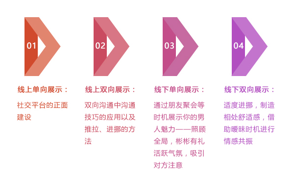

挽爱重点 : 别把拉黑当末日！
2018-1-11 橘子情感
最悲催的不是分手，
而是分手之后
你连再联系她的机会都没有，
面对分手+拉黑的双重打击，
你是不是也像我们的学员一样，
内心阴郁，有苦难言？
我知道刚刚遭受情感打击的你很难站在客观的视角去看待自己的遭遇，那么让我们暂时跳出这感情的圈子，我来问你个问题：你会把什么样的人加入黑名单？或者说，一个对你而言无关紧要的陌生人，你会刻意把ta加到黑名单吗？
我想绝大部分人的答案一定是：不会。那么同理，我们可以顺势分析一下，为什么你的前女友要把你加到黑名单？无非是两个原因 :
她在生你的气，甚至因为生气而讨厌你。
因为生气而拉黑你，就是我们所说的冲动型拉黑。女人生你气的原因有很多，分手了也不会例外。比如你出轨被抓包，触碰了她的底线，罪加一等；或者你在分手后总对她死缠烂打，让她觉得你懦弱没担当，拉黑以示警告。
总之我想告诉你的是，她气急了拉黑你，归根结底是因为在乎，只是她自己没有意识到而已。
她在用这种方式逼迫自己忘记你。
第二种情况，因为她想要彻底忘掉你而拉黑你。她对你的感情还很深，只是因为一些迫不得已的或者不可抗的理由不得不跟你分手，再用拉黑的方式逼迫自己把你忘记。
可事实上这只是女人自欺欺人的行为，因为她越是想忘记你，她就越是无法忘记你，墨菲定律，就是这个道理。
看到这里，你还觉得拉黑是分手后最悲剧的后果吗？其实，能在前任的黑名单里待一段时间，你该暗自庆幸才是。
好了，我还要告诉你的一句话是，不要高兴得太早。分手初期的拉黑是她在乎你的表现，可如果你的自满使情况变得糟糕，那她的假绝情就会妥妥地变成真死心了。
待在她黑名单里的你，该怎么做？很简单：假意消失，伺机而动。
她不想跟你说话，不想再见到你，你就彻底从她的生活中消失。不要担心她会就此忘记你或者另寻新欢，女人不是冷血动物，几年的感情怎能说忘就忘？你的消失既顺了她的意，又能给她一段冷静的时间去梳理你们的关系，何乐而不为呢？至于这段时间具体是多长，每个人的情况各不相同，我建议你咨询我们的导师之后再下定论。
当然了，"消失"的这段时间并不是让你无欲无求，你一定要借机去提升自己。从改变你自身的令她不喜欢的缺点开始，到学习更多技能、丰富和拓展自身正面能量，不要停止前进的脚步，提升自我在任何时候都不会出错，人都喜欢和优秀的人交往，这是肯定的。
在为你定制的断联时间到了之后，你便可以再次出击，假借一些让她无法拒绝的理由把你加回来。比如以你们之间的工作联系为借口，或者你们的共同朋友需要帮助，甚至你可以主动去创造这样的联系，让自己成为那个可以为她提供帮助的不二人选，找到最佳的复联时机。
注意隐藏你的需求感。在对方向你或你向对方提供完帮助之后，不要再多说一句话，主动切断你们的话题，更不要总是联系她，学会循序渐进地联系，当你们产生共同话题时再私聊交流，并让自己具备主动终止话题的能力。让她觉得你对于复合没有任何想法，这样更有利于接下来的吸引力传递。
在有限的交流中如何升级关系？这就需要你在导师的帮助下学会在保持自身框架的同时，向对方传递你的吸引力。分手初期你已经着手开始提升自身的价值，所以现在你只需要相信自己，相信自己的魅力，相信自己变得更好了可以吸引对方。自信是你传递魅力的基础，你要先相信自己，别人才会相信你。
传递吸引力的阶段，你要不断注意保持自己的框架。记住你变得更优秀了，你的选择空间也更多了，你很想她，但你不是非她不可，并且你的展示也不单单针对她，让自己在处于主动地位的同时给她制造隐隐的危机感，让她意识到你的重要性。
当她被你牢牢吸引，接下来你就可以引导她增加对你们感情的投入，这种投入可以是时间、精力，甚至金钱，当她有一天意识到自己的投入越来越多，就会意识到对你的爱越来越深
当然，话说起来漂亮又简单，真正的实施过程就没有那么容易了。很多学员不知道挽回什么时候该切入，如何切入，怎样寻找或创造切入点，也害怕直接切入对方再次拒绝自己，这些疑难杂症也正是我们情感咨询师存在的意义，挽回之路需要步步为营。
如果你找不到方向，我们在这里等你。